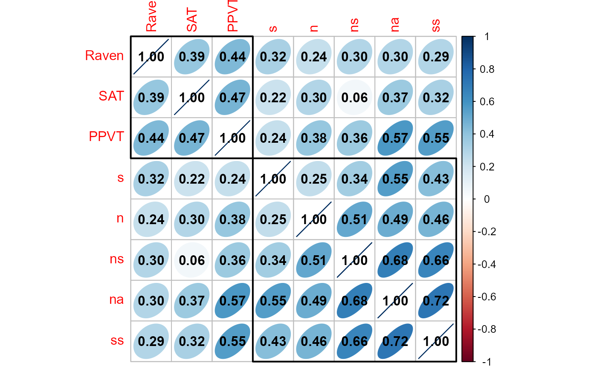
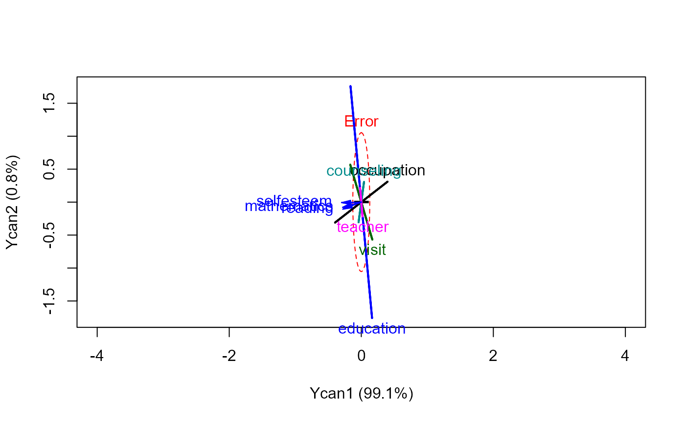
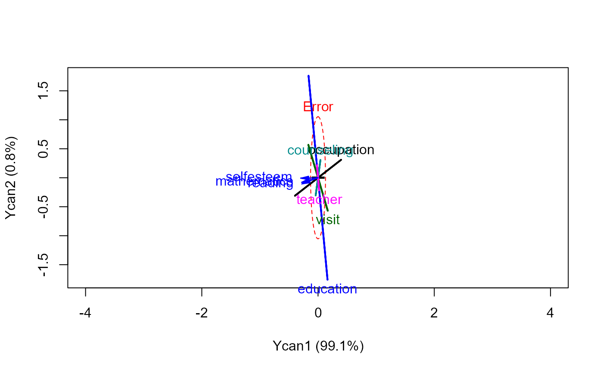

The function cancor generalizes and regularizes computation for
canonical correlation analysis in a way conducive to visualization using
methods in the heplots package.
The package provides the following display, extractor and plotting methods for "cancor" objects
print(), summary()Print and summarise the CCA
coef()Extract coefficients for X, Y, or both
scores()Extract observation scores on the canonical variables
redundancy()Redundancy analysis: proportion of variances of the variables in each set (X and Y) accounted for by the variables in the other set through the canonical variates
plot()Plot pairs of canonical scores with a data ellipse and regression line
heplot()HE plot of the Y canonical variables showing effects of the X variables and projections of the Y variables in this space.
As well, the function provides for observation weights, which may be useful in some situations, as well as providing a basis for robust methods in which potential outliers can be down-weighted.
Usage
cancor(x, ...)
# S3 method for class 'formula'
cancor(formula, data, subset, weights, na.rm = TRUE, method = "gensvd", ...)
# Default S3 method
cancor(
x,
y,
weights,
X.names = colnames(x),
Y.names = colnames(y),
row.names = rownames(x),
xcenter = TRUE,
ycenter = TRUE,
xscale = FALSE,
yscale = FALSE,
ndim = min(p, q),
set.names = c("X", "Y"),
prefix = c("Xcan", "Ycan"),
na.rm = TRUE,
use = if (na.rm) "complete" else "pairwise",
method = "gensvd",
...
)
# S3 method for class 'cancor'
print(x, digits = max(getOption("digits") - 2, 3), ...)
# S3 method for class 'cancor'
summary(object, digits = max(getOption("digits") - 2, 3), ...)
# S3 method for class 'cancor'
scores(x, type = c("x", "y", "both", "list", "data.frame"), ...)
# S3 method for class 'cancor'
coef(object, type = c("x", "y", "both", "list"), standardize = FALSE, ...)Arguments
- x
Varies depending on method. For the
cancor.defaultmethod, this should be a matrix or data.frame whose columns contain the X variables- ...
Other arguments, passed to methods
- formula
A two-sided formula of the form
cbind(y1, y2, y3, \dots) ~ x1 + x2 + x3 + \dots- data
The data.frame within which the formula is evaluated
- subset
an optional vector specifying a subset of observations to be used in the calculations.
- weights
Observation weights. If supplied, this must be a vector of length equal to the number of observations in X and Y, typically within (0,1). In that case, the variance-covariance matrices are computed using stats::cov.wt, and the number of observations is taken as the number of non-zero weights.
- na.rm
logical, determining whether observations with missing cases are excluded in the computation of the variance matrix of (X,Y). See Notes for details on missing data.
- method
the method to be used for calculation; currently only
method = "gensvd"is supported;- y
For the
cancor.defaultmethod, a matrix or data.frame whose columns contain the Y variables- X.names, Y.names
Character vectors of names for the X and Y variables.
- row.names
Observation names in
x,y- xcenter, ycenter
logical. Center the X, Y variables? (not yet implemented)
- xscale, yscale
logical. Scale the X, Y variables to unit variance? (not yet implemented)
- ndim
Number of canonical dimensions to retain in the result, for scores, coefficients, etc.
- set.names
A vector of two character strings, giving names for the collections of the X, Y variables.
- prefix
A vector of two character strings, giving prefixes used to name the X and Y canonical variables, respectively.
- use
argument passed to
vardetermining how missing data are handled. Only the default,use="complete"is allowed when observation weights are supplied.- digits
Number of digits passed to
printandsummarymethods- object
A
cancorobject for related methods.- type
For the
coefmethod, the type of coefficients returned, one of"x","y","both". For thescoresmethod, the same list, or"data.frame", which returns a data.frame containing the X and Y canonical scores.- standardize
For the
coefmethod, whether coefficients should be standardized by dividing by the standard deviations of the X and Y variables.
Value
An object of class cancorr, a list with the following
components:
- cancor
Canonical correlations, i.e., the correlations between each canonical variate for the Y variables with the corresponding canonical variate for the X variables.
- names
Names for various items, a list of 4 components:
X,Y,row.names,set.names- ndim
Number of canonical dimensions extracted,
<= min(p,q)- dim
Problem dimensions, a list of 3 components:
p(number of X variables),q(number of Y variables),n(sample size)- coef
Canonical coefficients, a list of 2 components:
X,Y- scores
Canonical variate scores, a list of 2 components:
X,Y- scores
Canonical variate scores, a list of 2 components:
XCanonical variate scores for the X variables
YCanonical variate scores for the Y variables
- X
The matrix X
- Y
The matrix Y
- weights
Observation weights, if supplied, else
NULL- structure
Structure correlations, a list of 4 components:
X.xscores,Y.xscores,X.yscores,Y.yscores- structure
Structure correlations ("loadings"), a list of 4 components:
- X.xscores
Structure correlations of the X variables with the Xcan canonical scores
- Y.xscores
Structure correlations of the Y variables with the Xcan canonical scores
- X.yscores
Structure correlations of the X variables with the Ycan canonical scores
- Y.yscores
Structure correlations of the Y variables with the Ycan canonical scores
The formula method also returns components
callandterms
Details
Canonical correlation analysis (CCA), as traditionally presented is used to identify and measure the associations between two sets of quantitative variables, X and Y. It is often used in the same situations for which a multivariate multiple regression analysis (MMRA) would be used.
However, CCA is is “symmetric” in that the sets X and Y have equivalent status, and the goal is to find orthogonal linear combinations of each having maximal (canonical) correlations. On the other hand, MMRA is “asymmetric”, in that the Y set is considered as responses, each one to be explained by separate linear combinations of the Xs.
Let \(\mathbf{Y}_{n \times p}\) and \(\mathbf{X}_{n \times q}\) be two sets of variables over which CCA is computed. We find canonical coefficients \(\mathbf{A}_{p \times k}\) and \(\mathbf{B}_{q \times k}, k=\min(p,q)\) such that the canonical variables $$\mathbf{U}_{n \times k} = \mathbf{Y} \mathbf{A} \quad \text{and} \quad \mathbf{V}_{n \times k} = \mathbf{X} \mathbf{B}$$ have maximal, diagonal correlation structure. That is, the coefficients \(\mathbf{A}\) and \(\mathbf{B}\) are chosen such that the (canonical) correlations between each pair \(r_i = \text{cor}(\mathbf{u}_i, \mathbf{v}_i), i=1, 2, \dots , k\) are maximized and all other pairs are uncorrelated, \(r_{ij} = \text{cor}(\mathbf{u}_i, \mathbf{v}_j) = 0, i \ne j\). Thus, all correlations between the X and Y variables are channeled through the correlations between the pairs of canonical variates.
For visualization using HE plots, it is most natural to consider
plots representing the relations among the canonical variables for the Y
variables in terms of a multivariate linear model predicting the Y canonical
scores, using either the X variables or the X canonical scores as
predictors. Such plots, using heplot.cancor() provide a
low-rank (1D, 2D, 3D) visualization of the relations between the two sets,
and so are useful in cases when there are more than 2 or 3 variables in each
of X and Y.
The connection between CCA and HE plots for MMRA models can be developed as follows. CCA can also be viewed as a principal component transformation of the predicted values of one set of variables from a regression on the other set of variables, in the metric of the error covariance matrix.
For example, regress the Y variables on the X variables, giving predicted
values \(\hat{Y} = X (X'X)^{-1} X' Y\) and residuals \(R = Y -
\hat{Y}\). The error covariance matrix is \(E = R'R/(n-1)\). Choose a
transformation Q that orthogonalizes the error covariance matrix to an
identity, that is, \((RQ)'(RQ) = Q' R' R Q = (n-1) I\), and apply the same
transformation to the predicted values to yield, say, \(Z = \hat{Y} Q\).
Then, a principal component analysis on the covariance matrix of Z gives
eigenvalues of \(E^{-1} H\), and so is equivalent to the MMRA analysis of
lm(Y ~ X) statistically, but visualized here in canonical space.
Note
Not all features of CCA are presently implemented: standardized vs. raw scores, more flexible handling of missing data, other plot methods, ...
References
Gittins, R. (1985). Canonical Analysis: A Review with Applications in Ecology, Berlin: Springer.
Mardia, K. V., Kent, J. T. and Bibby, J. M. (1979). Multivariate Analysis. London: Academic Press.
See also
Other implementations of CCA: stats::cancor() (very
basic), yacca::cca() in the yacca (fairly complete, but
very messy return structure), CCA::cc() in CCA (fairly
complete, very messy return structure, no longer maintained).
redundancy(), for redundancy analysis;
plot.cancor(), for enhanced scatterplots of the canonical variates.
heplot.cancor() for CCA HE plots and heplots::heplot()
for generic heplot methods.
candisc() for related methods focused on multivariate linear
models with one or more factors among the X variables.
Examples
data(Rohwer, package="heplots")
X <- as.matrix(Rohwer[,6:10]) # the PA tests
Y <- as.matrix(Rohwer[,3:5]) # the aptitude/ability variables
# visualize the correlation matrix using corrplot()
if (require(corrplot)) {
M <- cor(cbind(X,Y))
corrplot(M, method="ellipse", order="hclust", addrect=2, addCoef.col="black")
}
#> Loading required package: corrplot
#> corrplot 0.95 loaded

(cc <- cancor(X, Y, set.names=c("PA", "Ability")))
#>
#> Canonical correlation analysis of:
#> 5 PA variables: n, s, ns, na, ss
#> with 3 Ability variables: SAT, PPVT, Raven
#>
#> CanR CanRSQ Eigen percent cum scree
#> 1 0.6703 0.44934 0.81599 77.30 77.30 ******************************
#> 2 0.3837 0.14719 0.17260 16.35 93.65 ******
#> 3 0.2506 0.06282 0.06704 6.35 100.00 **
#>
#> Test of H0: The canonical correlations in the
#> current row and all that follow are zero
#>
#> CanR LR test stat approx F numDF denDF Pr(> F)
#> 1 0.67033 0.44011 3.8961 15 168.8 5.535e-06 ***
#> 2 0.38366 0.79923 1.8379 8 124.0 0.07608 .
#> 3 0.25065 0.93718 1.4078 3 63.0 0.24881
#> ---
#> Signif. codes: 0 '***' 0.001 '**' 0.01 '*' 0.05 '.' 0.1 ' ' 1
## Canonical correlation analysis of:
## 5 PA variables: n, s, ns, na, ss
## with 3 Ability variables: SAT, PPVT, Raven
##
## CanR CanRSQ Eigen percent cum scree
## 1 0.6703 0.44934 0.81599 77.30 77.30 ******************************
## 2 0.3837 0.14719 0.17260 16.35 93.65 ******
## 3 0.2506 0.06282 0.06704 6.35 100.00 **
##
## Test of H0: The canonical correlations in the
## current row and all that follow are zero
##
## CanR WilksL F df1 df2 p.value
## 1 0.67033 0.44011 3.8961 15 168.8 0.000006
## 2 0.38366 0.79923 1.8379 8 124.0 0.076076
## 3 0.25065 0.93718 1.4078 3 63.0 0.248814
# formula method
cc <- cancor(cbind(SAT, PPVT, Raven) ~ n + s + ns + na + ss, data=Rohwer,
set.names=c("PA", "Ability"))
#> Warning: non-list contrasts argument ignored
# using observation weights
set.seed(12345)
wts <- sample(0:1, size=nrow(Rohwer), replace=TRUE, prob=c(.05, .95))
(ccw <- cancor(X, Y, set.names=c("PA", "Ability"), weights=wts) )
#>
#> Canonical correlation analysis of:
#> 5 PA variables: n, s, ns, na, ss
#> with 3 Ability variables: SAT, PPVT, Raven
#>
#> CanR CanRSQ Eigen percent cum scree
#> 1 0.6738 0.45396 0.83136 78.894 78.89 ******************************
#> 2 0.3827 0.14645 0.17157 16.282 95.18 ******
#> 3 0.2199 0.04837 0.05083 4.824 100.00 **
#>
#> Test of H0: The canonical correlations in the
#> current row and all that follow are zero
#>
#> CanR LR test stat approx F numDF denDF Pr(> F)
#> 1 0.67376 0.44353 3.4755 15 152.23 4.139e-05 ***
#> 2 0.38268 0.81227 1.5338 8 112.00 0.1534
#> 3 0.21993 0.95163 0.9658 3 57.00 0.4152
#> ---
#> Signif. codes: 0 '***' 0.001 '**' 0.01 '*' 0.05 '.' 0.1 ' ' 1
# show correlations of the canonical scores
zapsmall(cor(scores(cc, type="x"), scores(cc, type="y")))
#> Ycan1 Ycan2 Ycan3
#> Xcan1 0.6703254 0.0000000 0.0000000
#> Xcan2 0.0000000 0.3836569 0.0000000
#> Xcan3 0.0000000 0.0000000 0.2506487
# standardized coefficients
coef(cc, type="both", standardize=TRUE)
#> [[1]]
#> Xcan1 Xcan2 Xcan3
#> n -0.2918658 -0.17681207 0.5064680
#> s 0.2376371 0.49037479 1.0227353
#> ns 0.6217178 1.21506423 -0.5090243
#> na -0.8636882 -0.58576035 -0.3154802
#> ss -0.5380809 -0.04973148 -0.2171691
#>
#> [[2]]
#> Ycan1 Ycan2 Ycan3
#> SAT -0.4279751 -0.7620281 0.7643153
#> PPVT -0.8117586 0.2691718 -0.8335792
#> Raven 0.1940206 0.9301330 0.6401159
#>
# plot canonical scores
plot(cc,
smooth=TRUE, pch=16, id.n = 3)
text(-2, 1.5, paste("Can R =", round(cc$cancor[1], 3)), pos = 4)
plot(cc, which = 2,
smooth=TRUE, pch=16, id.n = 3)
text(-2.2, 2.5, paste("Can R =", round(cc$cancor[2], 3)), pos = 4)
 ##################
data(schooldata)
##################
#fit the MMreg model
school.mod <- lm(cbind(reading, mathematics, selfesteem) ~
education + occupation + visit + counseling + teacher, data=schooldata)
car::Anova(school.mod)
#>
#> Type II MANOVA Tests: Pillai test statistic
#> Df test stat approx F num Df den Df Pr(>F)
#> education 1 0.37564 12.4337 3 62 1.820e-06 ***
#> occupation 1 0.56658 27.0159 3 62 2.687e-11 ***
#> visit 1 0.26032 7.2734 3 62 0.0002948 ***
#> counseling 1 0.06465 1.4286 3 62 0.2429676
#> teacher 1 0.04906 1.0661 3 62 0.3700291
#> ---
#> Signif. codes: 0 '***' 0.001 '**' 0.01 '*' 0.05 '.' 0.1 ' ' 1
pairs(school.mod)
# canonical correlation analysis
school.cc <- cancor(cbind(reading, mathematics, selfesteem) ~
education + occupation + visit + counseling + teacher, data=schooldata)
#> Warning: non-list contrasts argument ignored
school.cc
#>
#> Canonical correlation analysis of:
#> 5 X variables: education, occupation, visit, counseling, teacher
#> with 3 Y variables: reading, mathematics, selfesteem
#>
#> CanR CanRSQ Eigen percent cum scree
#> 1 0.9967 0.9934 151.0502 99.09963 99.10 ******************************
#> 2 0.7456 0.5559 1.2516 0.82112 99.92
#> 3 0.3283 0.1078 0.1208 0.07925 100.00
#>
#> Test of H0: The canonical correlations in the
#> current row and all that follow are zero
#>
#> CanR LR test stat approx F numDF denDF Pr(> F)
#> 1 0.99671 0.00261 87.272 15 171.56 < 2.2e-16 ***
#> 2 0.74556 0.39627 9.270 8 126.00 5.476e-10 ***
#> 3 0.32829 0.89222 2.577 3 64.00 0.06141 .
#> ---
#> Signif. codes: 0 '***' 0.001 '**' 0.01 '*' 0.05 '.' 0.1 ' ' 1
heplot(school.cc, xpd=TRUE, scale=0.3)

##################
data(schooldata)
##################
#fit the MMreg model
school.mod <- lm(cbind(reading, mathematics, selfesteem) ~
education + occupation + visit + counseling + teacher, data=schooldata)
car::Anova(school.mod)
#>
#> Type II MANOVA Tests: Pillai test statistic
#> Df test stat approx F num Df den Df Pr(>F)
#> education 1 0.37564 12.4337 3 62 1.820e-06 ***
#> occupation 1 0.56658 27.0159 3 62 2.687e-11 ***
#> visit 1 0.26032 7.2734 3 62 0.0002948 ***
#> counseling 1 0.06465 1.4286 3 62 0.2429676
#> teacher 1 0.04906 1.0661 3 62 0.3700291
#> ---
#> Signif. codes: 0 '***' 0.001 '**' 0.01 '*' 0.05 '.' 0.1 ' ' 1
pairs(school.mod)
# canonical correlation analysis
school.cc <- cancor(cbind(reading, mathematics, selfesteem) ~
education + occupation + visit + counseling + teacher, data=schooldata)
#> Warning: non-list contrasts argument ignored
school.cc
#>
#> Canonical correlation analysis of:
#> 5 X variables: education, occupation, visit, counseling, teacher
#> with 3 Y variables: reading, mathematics, selfesteem
#>
#> CanR CanRSQ Eigen percent cum scree
#> 1 0.9967 0.9934 151.0502 99.09963 99.10 ******************************
#> 2 0.7456 0.5559 1.2516 0.82112 99.92
#> 3 0.3283 0.1078 0.1208 0.07925 100.00
#>
#> Test of H0: The canonical correlations in the
#> current row and all that follow are zero
#>
#> CanR LR test stat approx F numDF denDF Pr(> F)
#> 1 0.99671 0.00261 87.272 15 171.56 < 2.2e-16 ***
#> 2 0.74556 0.39627 9.270 8 126.00 5.476e-10 ***
#> 3 0.32829 0.89222 2.577 3 64.00 0.06141 .
#> ---
#> Signif. codes: 0 '***' 0.001 '**' 0.01 '*' 0.05 '.' 0.1 ' ' 1
heplot(school.cc, xpd=TRUE, scale=0.3)
